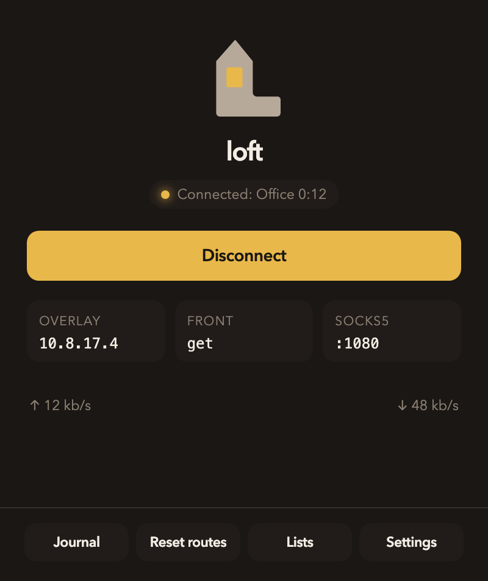
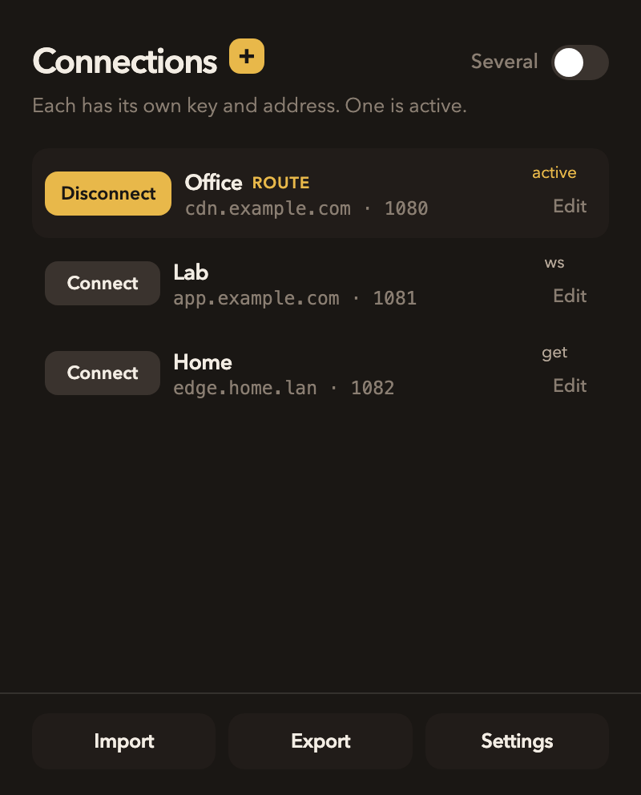
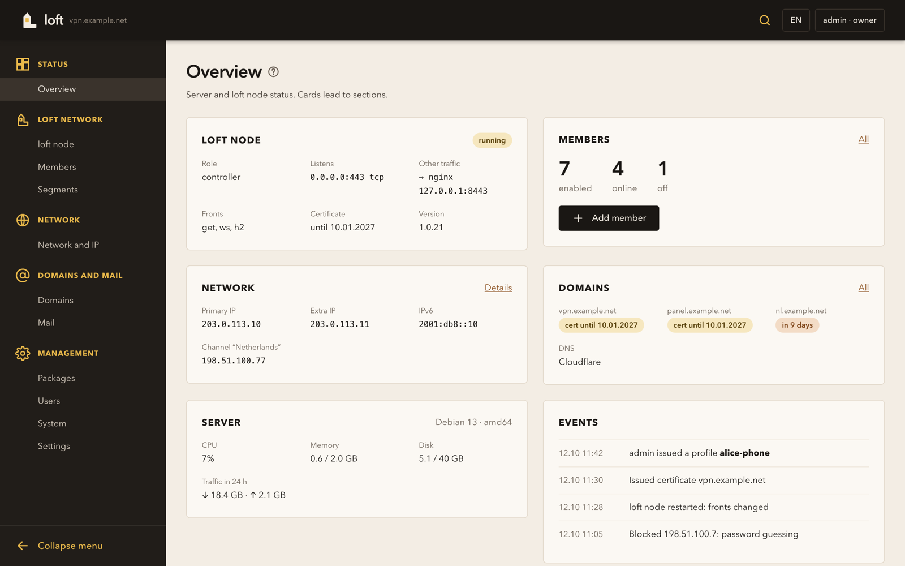

macOS
App
Menu-bar client. Named connections, loft:// import, local SOCKS5 and TUN.
Download the DMGLoft Overlay For TLS
SSH, a browser, and curl speak to a local SOCKS5 or TUN. Streams ride one mux, sealed with ChaCha20-Poly1305. On the public path the session is TLS 1.3, so a CDN or reverse proxy may sit in front of the node. Short disconnects and packet loss leave inner TCP standing.

One protocol, loft/1.0. The operator holds the node, the panel, and the member keys.
Menu-bar client. Named connections, loft:// import, local SOCKS5 and TUN.
Download the DMGWeb admin for one server: networks, members, domains, mail, packages. Install without editing files by hand.
Panel overviewSelf-hosted edge. Debian package or tarball. Fronts: GET, WebSocket, HTTP/2, QUIC, HTTP/3.
Install the nodeOpen protocol. A third party may implement a client or a node from the wire document.
Read the protocolThe public path is ordinary HTTPS. The overlay is the session inside it.
Applications talk to a local SOCKS5 or TUN. The client keeps that listener while the front rotates.
Streams share one mux and are sealed with ChaCha20-Poly1305.
Outside, the session is TLS 1.3. A CDN or reverse proxy may terminate it.
A short gap parks the mux for gap_hold_ms. Resume uses a fresh 0x02 and the same instance_id.
The macOS client lives in the menu bar. Open the overlay, keep several named connections, import a loft:// link or a .loft file.

One loft server: the node, networks and members, addresses and upstream channels, domains, certificates, mail, packages, and panel users.

Binaries from the latest GitHub Release. Dist publishes these names on every v* tag.
| Kind | Apple Silicon / arm64 | Intel / amd64 |
|---|---|---|
| macOS app | DMG | DMG |
| macOS CLI | tar.gz | tar.gz |
| Linux CLI | tar.gz | tar.gz |
| Node | tar.gz · deb | tar.gz · deb |
| Panel | tar.gz · deb | tar.gz · deb |
The macOS DMG is ad-hoc signed. CLI archives contain loft, loft-front, loft-probe, and loft-bench. Checksums sit next to the files.
An HTTPS overlay for operators. A laboratory LAN reached from outside, a server fleet, or a site-to-site path. Protocol loft/1.0. Share links as loft://.
The operator. Member keys live on the controller. The public path is ordinary HTTPS; identity is inside the session.
Local SOCKS5 or TUN. SSH, a browser, and curl stay on the machine. The overlay carries those streams.
macOS app and CLI, Linux CLI, Debian node and panel. RouterOS is a container. Keenetic, iOS, and Android are in the catalog.
Yes. Apache License 2.0. A third party may implement loft from the spec. Software version is independent of protocol loft/1.0.